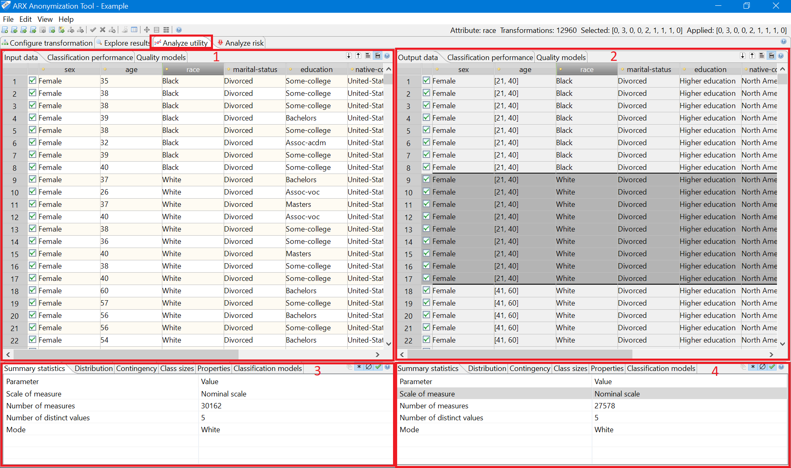

In this section a transformed dataset can be compared to the original input dataset. The horizontal and vertical scrollbars of both tables are synchronized.
The checkboxes indicate, which rows are part of the research sample. The checkboxes in the table displaying the output dataset indicate the sample that was selected when the anonymization process was performed. They cannot be altered. The checkboxes in the table displaying the input dataset represent the current research sample. They are editable.
Each table offers a few options, which are accessible via buttons in the top-right corner of the view: